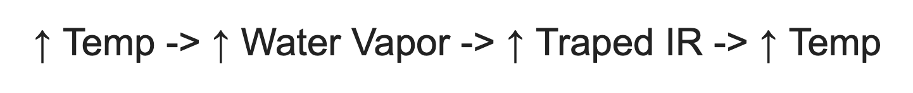
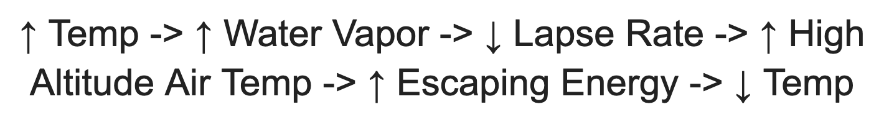
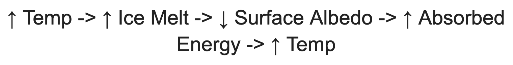
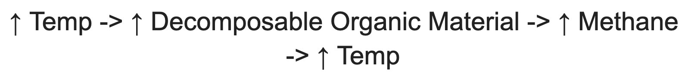
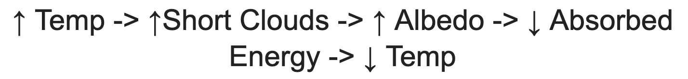
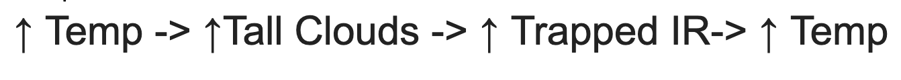

Feedback Loops
Quick Def: Feedback loops will amplify the warming caused by GHGs. If feedback loops are triggered then they will warm the earth without any human input. If we trigger a feedback loop and then reach carbon zero we would still see a significant increase in temperature because feedback loops are self sustaining. Feedback loops are one of the main reasons why climate scientists set hopeful limits on ppm and temperature increases.
Feedback loops are where an increase in temperature alters the biosphere, and that alteration leads to another change in temperature. A feedback loop is negative if the rise in temperature leads to a decrease in temperature (think thermostat turning on the air when it's too hot). A feedback loop is positive if the increase in temperature leads to another rise in temperature (think thermostat turning on the heat when it is too hot).
Water vapor: positive feedback loop
One of the most significant feedback loops is the water vapor positive feedback loops. Water vapor is an excellent greenhouse gas. The reason we are not worried about our water vapor emissions is that there is a very efficient way to remove excess water vapor from the atmosphere: the water cycle. If the air has more water vapor than usual it rains, problem solved. Increased temperatures start to mess this system up. When the air gets warmer, it has a greater capacity to hold moisture. With warmer temperatures, there will also be an increase in evaporation, which means this increased capacity will easily be filled. Therefore with increased temperatures, there will be more water vapor in our atmosphere.
Water vapor is a greenhouse gas, which means that more water vapor leads to more IR being redirected at earth. This interference leads to increased temperatures, and thus the cycle has been completed. Hotter temperatures mean more water vapor, which means hotter temperatures and so on. Once positive feedback loops are triggered, we could stop putting greenhouse gasses into the atmosphere, but temperatures would still increase all on their own. It is estimated that this feedback loop doubles the impact of GHGs on climate.
Lapse rate: negative feedback loop
To understand this feedback loop learn about lapse rate first: LM Lapse Rate
As the atmosphere warms up, it can hold more water vapor. This capacity is because warm air is less dense, and there is more space in between the air molecules, and because warm air isn't going to be trying to steal the water vapors energy as much as cold air would. When there is more water vapor in the air, the lapse rate decreases. This decrease means that the air at the top of the atmosphere is going to be warmer. This increases the skin temperature of the earth's system. Since the top of the atmosphere is hotter, it is easier to push energy out of the earth system, which means that the planet will cool down. An increase in temperature causes a decrease in temperature. This loop is one of the only negative feedback loops that will help slow down global warming.
Ice albedo: positive feedback loop
Albedo is the percentage of incoming light that is reflected by an object. Black felt has low albedo, and a mirror has high albedo. In the natural world. Ice has a much higher albedo than rock or water. This difference means that it reflects more incoming sunlight without absorbing it. When light is reflected, it travels upwards as visible or UV radiation and doesn’t interact with GHGs. When light is absorbed, it is reemitted as IR and does interact with GHGs. When light is reflected, it doesn’t have the opportunity to increase the earth’s temperature. If we are worried about the planet being too warm, high albedo surfaces are our friend.
When the temperature rises, ice melts, and in extreme cases, it exposes the rock or the water below. Since the ice has a higher albedo than the rock or water, the melting increases the amount of energy the earth absorbs. This absorption increases the temperature, which melts more ice. This loop also works with melting snow in regions where snow stays on the ground year-round. Scientists predict that the poles will be disproportionately affected by global warming because of this feedback loop.
Peat bog and permafrost: positive feedback loops
Peat bogs are regions of land that are waterlogged and full of partially decomposed organic matter and anaerobic bacteria that slowly break the matter down. Decomposition happens extraordinarily slowly due to the lack of oxygen. As moss grows on the surface and dies, organic material continues to pile up. There is a worry of peat bogs drying out with increased temperatures.
Permafrost is an area of permanently frozen organic material. This material is entirely removed from decomposition. There is a worry that permafrost may melt with increased temperatures.
If peat bogs dried out and permafrost thawed, then a massive amount of organic material will be made available for decomposition. This decomposition would release CO2 into the atmosphere, which is a greenhouse gas. The increase in CO2 would then increase temperatures completing the loop. Permafrost and peat bogs store a total of 2112 gigatons of carbon. For comparison, all the world’s publicly listed oil reserves contain 2795 gigatons of carbon.
Clouds: mixed bag
Scientists are not sure whether clouds will be helpful or harmful concerning climate change. The reason is that clouds have the potential to be part of a positive feedback loop and a negative feedback loop. Scientists can agree that with increased evaporation, more clouds will form. They are not sure if these clouds will be short clouds or tall clouds.
The tops of all clouds are good at reflecting incoming sunlight out into space. This property would raise the earth’s albedo and be a positive feedback loop. The catch is that the bottom of clouds is also good at absorbing outgoing IR. If the clouds that are formed are short, then this isn’t a problem. The IR is absorbed at the bottom and re-emitted at the top. Since the top and bottom of the cloud are very close to each other. There is not much energy lost between absorption and re-emission. If the clouds are tall, then there is a large difference in elevation between where the IR is absorbed and where it is emitted. This difference means that the IR is being released by cooler molecules, and the difference in temperature is trapped heat.
The effect of clouds is one of the most debated feedback loops. Right now, it seems like the majority of scientists think that clouds will be a positive feedback loop.
Negative Loop:
Positive Loop:
